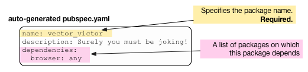
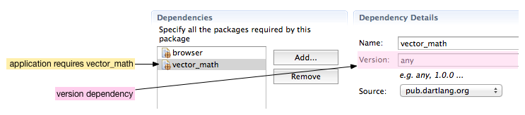
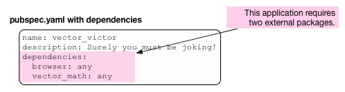

安装共享包
借用和分享代码。
现在你已经了解了 DOM 编程的基本知识， 也可以用创建并运行 Dart 应用程序了， 是时候了解如何借用其他开发者编写的代码了。 很多有用的、有趣的可重用的 Dart 代码 包都在 pub.dartlang.org 资源库中。
该教材告诉你如何用 pub 工具 — Dart 中
的包管理器 — 来
安装资源库中的包，本教材用 vector_math 包
示例。
你可以用同样的步骤来安装
pub.dartlang.org 中
的其他包，只需要修改的包的名字即可。
该教程还描述了如何在一个定义好
的包中查找一些你需要的资源。
关于 pubspec.yaml 文件
要使用外部的包，
你的应用首选要是一个包。
任何在项目根目录中
有一个合法 pubspec.yaml 文件的都是一个包，
就可以使用外部包了。
当用 Dart 编辑器创建应用的时候，
Dart 编辑器会自动创建一个 pubspec.yaml文件。
用 Dart 编辑器创建一个名字为 vector_victor 的项目。
打开 pubspec.yaml 文件查看其内容。

pubspec.yaml 文件用 YAML (参考 Pubspec Format 深入了解) 格式定义了包的规范。 Dart 编辑器提供了一个用户界面来编辑 pubspec.yaml 文件，这样你即使不了解 YAML 格式也没关系。 或者你也可以点击编辑模板下放的 Source 标签来直接 编辑 YAML 代码。 下面是 vector_victor 应用的 pubspec.yaml 文件。

包名字是必须的。 你可能已经发现 pubspec.yaml 文件已经 列出了对 browser 包的依赖关系。 不使用 Polymer 的 Web 应用需要使用 browser 包。
定义包的依赖项
要使用外部包中的库， 你需要先把该包添加到 你应用 pubspec.yaml 文件中 的 dependencies 依赖项 列表中。 每个依赖项都指定了 你的应用需要用到的 包的名字和版本号。
下面在 vector_victor 应用中添加 一个依赖 vector_math 包的条目， vector_math 包在 pub.dartlang.org 资源库中。
- 在 Dart 编辑器中点击 Add 按钮。
- 在弹出对话框中输入包的名字。

Dart 编辑器在依赖项中添加该包。

注意 Version 输入框中的
any 代表该应用可以使用任何版本的
vector_math 包。
当你的项目依赖特定版本的包时，
你可以指定一个具体的值，
更多内容请参考
Pub 包版本策略
。
下面是修改后的 pubspec.yaml 文件：

pub.dartlang.org
是 Dart 包的主要公共资源库。
pub 自动检测该网站来
解决包依赖问题。
要使用该网站的任何包，
只需要指定该包的 名字即可，
其他的你就无须关心了。
安装包的依赖项
在 Dart 编辑器中，通过菜单 File > Save 来保存 pubspec.yaml 文件。 当保存该文件的时候， Dart 编辑器自动运行 pub install 命令， 该命令会自动安装项目依赖项中的 所有 Dart 库和包。 你也可以选择 Dart 编辑器 Tools 菜单中的 Pub Install 来安装。
Pub 把依赖的库放到项目跟目录下名字为 packages 的目录中。 点击 packages 目录前面的箭头来打开该目录。 然后可以在里面找到 vector_math 目录， 该目录引用了 vector_math 包中的 Dart 库。

Pub install 通过递归的方式来安装包， 如果依赖的包也有其他依赖项，则这些依赖项也会被安装。
Pub install 创建一个名字为 pubspec.lock 的文件，
该文件指定了当前安装的包的具体版本号。
这样可以帮助你提供一个稳定的开发环境。
以后，你可以修改该版本号，然后运行 pub update
来更新。
你获取到哪些东西(以及哪些没有获取到)？
除了 Dart 库以外， vector_math 包还有其他有用的资源 并 没有导入到你的项目目录。 下面去看看导入的库中都有那些内容 以及他们来自于何处。
要查看 vector_math 包的内容，
请访问
Dart vector math repository
项目主页。
尽管该项目中有很多文件和目录，
当你运行 pub install 命令的时候只安装了 lib 目录。
从包中导入库
点击 vector_math 目录前面的箭头打开该目录。
该目录包含一个名字为 vector_math.dart 的 Dart 代码文件，
该文件可以导入到你的项目中去，
而 src 目录包含了该库的源代码。
和使用 SDK 中的库一样，
用 import 语句来导入已经安装的库的代码。
Dart SDK 库是内置的并且用 dart: 作为前缀。
对于已经安装的外部包，用
package: 前缀。
import 'package:vector_math/vector_math.dart';
注意上面用的是文件名，而不是包名。
其他资源
- Dart 开发者在 pub.dartlang.org 共享代码。 可以在这里查找你需要的库，或者分享你自己 的 Dart 包。 查看 pub 文档 来开始使用和分享包。
接下来干啥？
在 pub.dartlang.org 有一个 Polymer.dart 包， 该包提供了数据绑定、模板和声明式事件处理函数 等功能让开发 web 应用更加简单。 在下一个教程 定义自定义 Element 将简单介绍 Polymer。